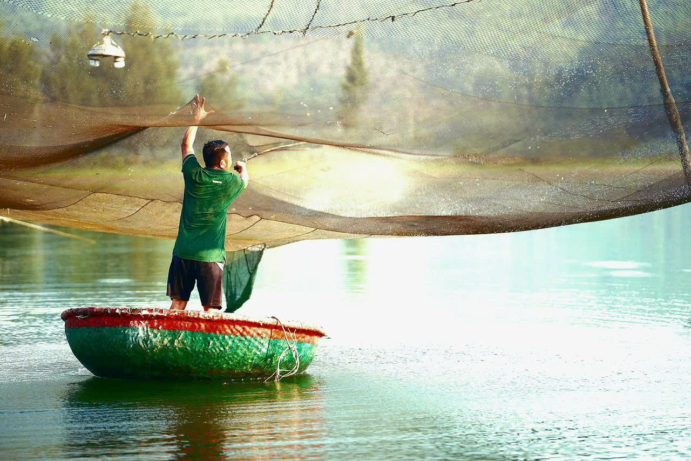
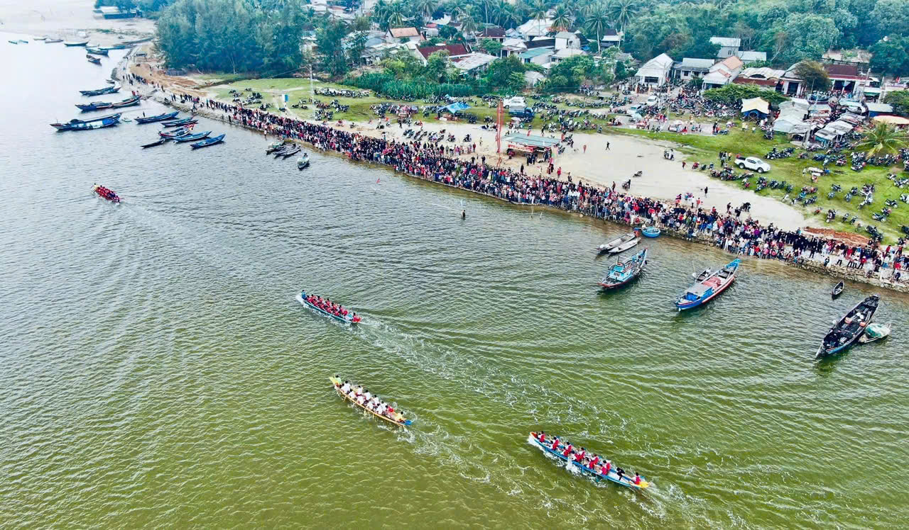
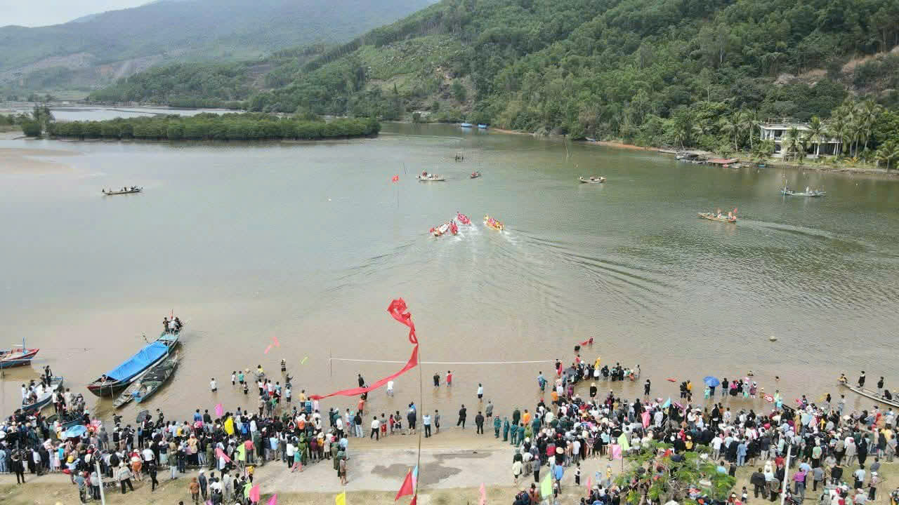
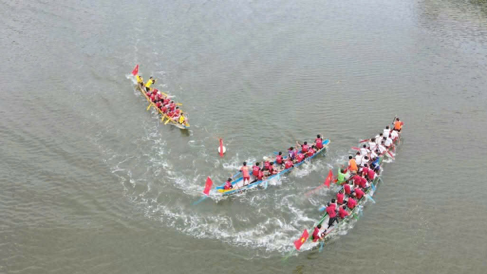
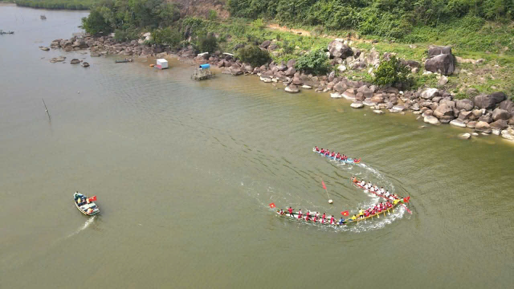

Mở đầu
Mỗi độ xuân về, khi những ngày Tết vẫn còn vương vấn trong không khí, người dân vùng biển lại háo hức chờ đón một sự kiện đặc biệt – lễ hội đua thuyền truyền thống vào sáng Mùng 6 Tết. Đây là hoạt động văn hóa cộng đồng mang đậm bản sắc địa phương, gắn bó mật thiết với đời sống sông nước và tinh thần hướng biển của cư dân nơi đây.
Không chỉ là cuộc tranh tài thể lực và kỹ thuật, lễ hội còn mang ý nghĩa cầu mong năm mới mưa thuận gió hòa, ra khơi thuận lợi và cuộc sống bình an.
Nguồn gốc hình thành và ý nghĩa tâm linh
Với cư dân vùng biển, con thuyền là biểu tượng của sinh kế, hy vọng và hành trình mưu sinh giữa đại dương. Chính vì vậy, từ xa xưa, người dân đã tổ chức đua thuyền vào đầu năm như một nghi lễ cầu may.

Cuộc đua diễn ra vào sáng Mùng 6 Tết – thời điểm kết thúc không khí nghỉ xuân, mở đầu nhịp sống lao động mới. Theo quan niệm dân gian, thuyền về đích mạnh mẽ tượng trưng cho một năm:
Biển yên sóng lặng
Đánh bắt thuận lợi
Mùa màng sung túc
Cộng đồng đoàn kết

Không chỉ mang tính tín ngưỡng, lễ hội còn phản ánh bản sắc văn hóa biển đặc trưng của cư dân miền Trung.
Lễ hội đua thuyền ở Chân Mây - Lăng Cô có gì đặc biệt?
Không khí lễ hội
Ngay từ khi mặt trời vừa ló dạng, không gian ven nước đã tràn ngập tiếng nói cười, tiếng trống và sắc màu rực rỡ.
Người dân tập trung dọc hai bên bờ để cổ vũ. Các đội đua đại diện cho từng thôn, khu dân cư, chuẩn bị kỹ lưỡng từ trang phục, thuyền đua đến chiến thuật thi đấu.

Khi hiệu lệnh xuất phát vang lên, những mái chèo đồng loạt rẽ nước, tạo nên nhịp điệu dồn dập, mạnh mẽ và đầy kịch tính. Tiếng hò reo vang vọng khắp không gian, hòa cùng nhịp chèo dứt khoát tạo nên bức tranh lễ hội sống động.
Khoảnh khắc thuyền về đích luôn là giây phút bùng nổ cảm xúc. Niềm vui chiến thắng không chỉ thuộc về đội đua mà lan tỏa đến cả cộng đồng.
Vẻ đẹp thiên nhiên làm nên sức hút đặc biệt
Lễ hội diễn ra trong khung cảnh thiên nhiên thơ mộng, gần Vịnh Lăng Cô – nơi được xem là một trong những vịnh biển đẹp của miền Trung.


Mặt nước xanh trong, núi non bao quanh và không khí đầu xuân trong lành tạo nên phông nền hoàn hảo cho những cuộc tranh tài sôi nổi.
Du khách đến đây không chỉ xem đua thuyền mà còn được tận hưởng cảnh sắc biển trời, chụp ảnh và trải nghiệm văn hóa địa phương chân thực.
Giá trị văn hóa – xã hội bền vững
Lễ hội đua thuyền mang nhiều giá trị vượt ra ngoài khuôn khổ thể thao:
- Bảo tồn phong tục truyền thống lâu đời
- Tăng cường sự gắn kết cộng đồng
- Khơi dậy tinh thần đoàn kết và ý chí bền bỉ
- Quảng bá hình ảnh du lịch địa phương
- Gìn giữ bản sắc văn hóa vùng biển

Đây cũng là một trong những nét văn hóa đặc trưng của Thành phố Huế – vùng đất nổi tiếng với chiều sâu lịch sử và đời sống lễ hội phong phú.
Trải nghiệm dành cho du khách
Tham dự lễ hội, du khách có thể:
- Hòa mình vào không khí lễ hội truyền thống
- Quan sát kỹ thuật chèo thuyền điêu luyện
- Khám phá đời sống ngư dân địa phương
- Thưởng thức hải sản tươi ngon
- Kết hợp du xuân và nghỉ dưỡng biển
- Đây là một trải nghiệm văn hóa sống động, chân thực và giàu cảm xúc.

Kinh nghiệm tham dự lễ hội
Thời gian
Sáng Mùng 6 Tết (đến sớm để chọn vị trí đẹp)
Trang phục
Gọn nhẹ, chống nắng tốt
Chuẩn bị
Máy ảnh, nước uống, giày di chuyển dễ dàng
Lưu ý
Giữ gìn vệ sinh, tôn trọng không gian lễ hội
Nguồn ảnh sử dụng trong bài
Ảnh bìa: UBND xã Chân Mây - Lăng Cô
Ảnh con thuyền: UBND xã Chân Mây - Lăng Cô
Ảnh lễ hội: UBND xã Chân Mây - Lăng Cô
Ảnh người dân tập trung bên bờ: UBND xã Chân Mây - Lăng Cô
Ảnh toàn cảnh biển Lăng Cô: Sưu tầm
Ảnh bờ biển Lăng Cô: Sưu tầm
Ảnh Hoạt động đua thuyền: UBND xã Chân Mây - Lăng Cô
Ảnh Hoạt động đua thuyền: UBND xã Chân Mây - Lăng Cô
*Tất cả hình ảnh được sử dụng cho mục đích minh họa. Bản quyền thuộc về tác giả và nguồn tương ứng.